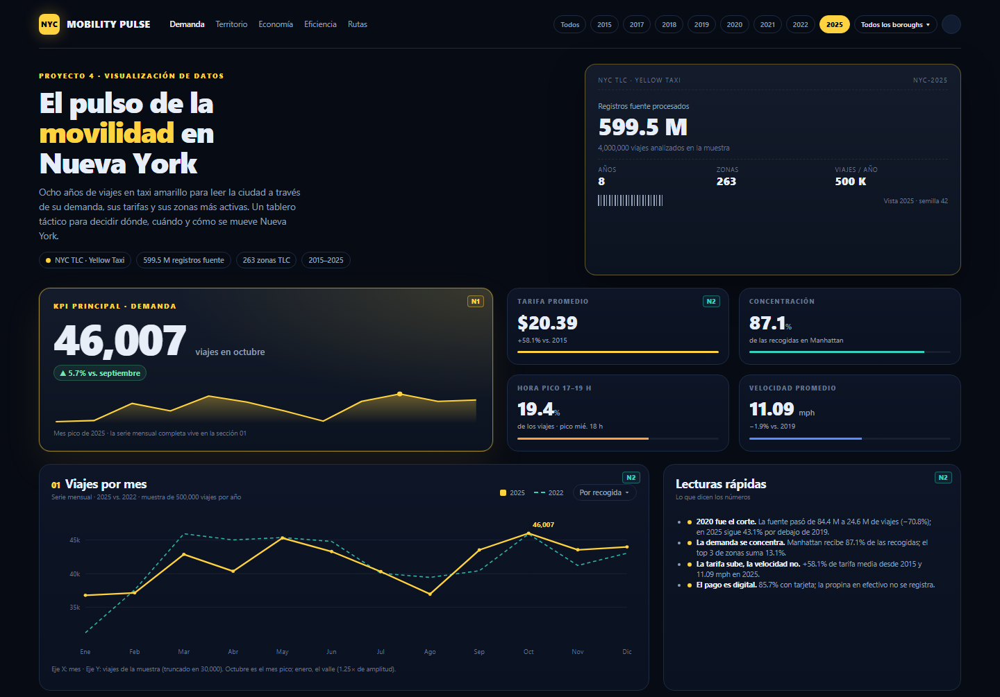
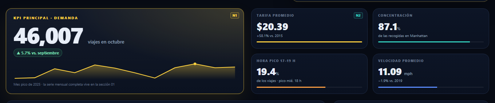
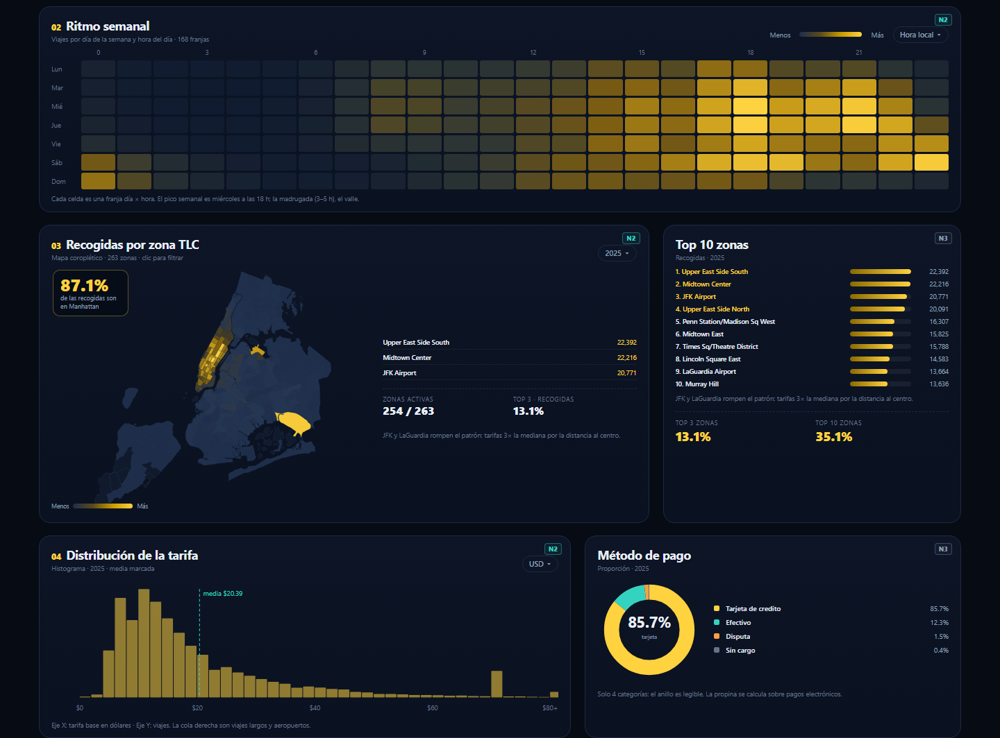
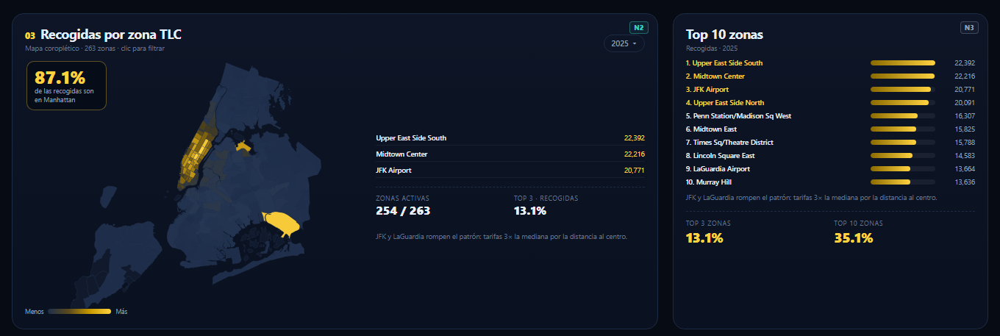
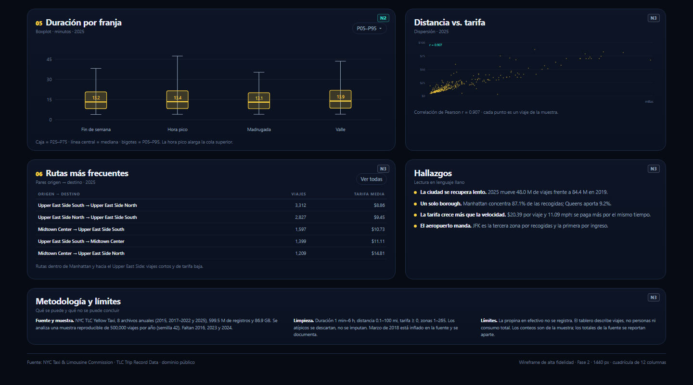
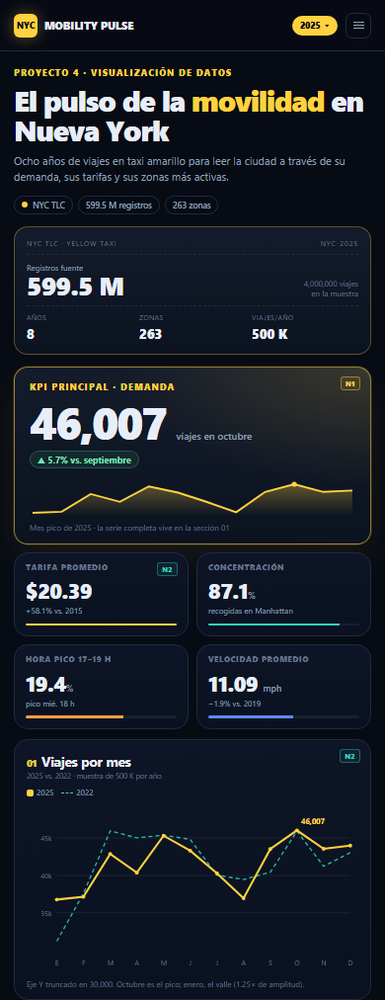
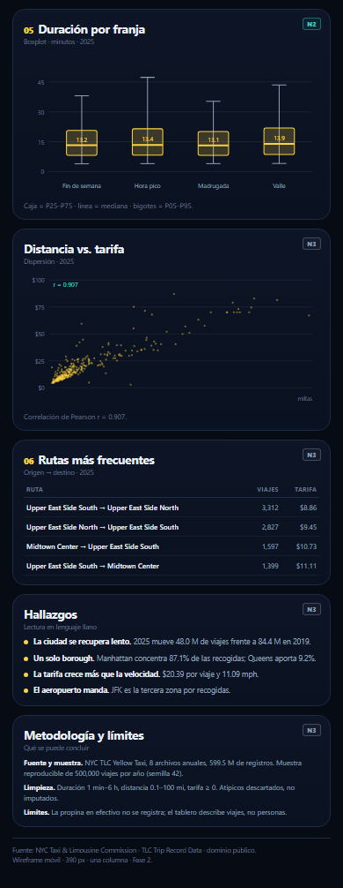
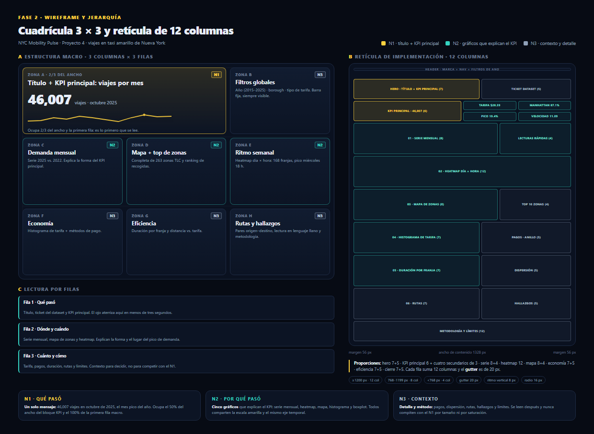

Resumen ejecutivo
Este documento cierra la Fase 2 del proyecto NYC Mobility Pulse: la traducción de una pregunta de movilidad urbana en una estructura visual concreta. No se parte de una hoja en blanco. El tablero ya implementado en el repositorio sirve como referencia y los wireframes reproducen su composición real, de modo que el diseño documentado y el producto construido no se contradicen.
La pregunta que ordena todo es ¿cuándo, dónde y a qué costo se mueve Nueva York? Para responderla se eligió un KPI principal: los viajes por mes, es decir, la demanda. Es el pulso de la ciudad: distingue flujo de stock, usa la marca de tiempo de recogida —el único campo sin valores inválidos en los ocho años— y conecta de forma natural con los cuatro KPIs secundarios que lo contextualizan: tarifa promedio ($20.39), concentración en Manhattan (87.1%), participación de la hora pico (19.4%) y velocidad promedio (11.09 mph).
El sistema visual es de cuatro colores base —azul noche, panel, texto marfil y amarillo taxi— con una extensión categórica de cuatro tonos. El amarillo #FFD23F no es decorativo: es el color del objeto de estudio y alcanza 13.63:1 de contraste sobre el fondo. La jerarquía se resolvió en tres niveles: N1 un solo mensaje, N2 los gráficos que lo explican y N3 el contexto que se lee después.
Ficha técnica del entregable
| Elemento | Definición |
|---|---|
| Proyecto | 4 — La movilidad urbana y el tráfico inteligente |
| Dataset | NYC TLC Yellow Taxi Trip Records · 8 archivos anuales (2015, 2017–2022, 2025) |
| Volumen | 599,475,232 registros fuente · 86.9 GB · 585,599,682 válidos (97.7%) |
| Muestra | 500,000 viajes por año · 4,000,000 en total · semilla 42 |
| Unidad espacial | 263 zonas TLC (taxi zones) y 5 boroughs |
| Entregables | Reporte, wireframe de escritorio (1440 px), wireframe móvil (390 px), esquema 3×3 |
Contenido
| 1 | Contexto y pregunta central | 3 |
| 2 | Dataset, limpieza y metodología | 4 |
| 3 | KPI principal: viajes por mes | 5 |
| 4 | KPIs secundarios y su justificación | 6 |
| 5 | Tipo de gráfico por KPI | 7 |
| 6 | Paleta de color y accesibilidad | 8 |
| 7 | Tipografía y sistema visual | 9 |
| 8 | Wireframe de escritorio | 10 |
| 9 | Wireframe móvil | 13 |
| 10 | Cuadrícula 3×3 y jerarquía N1/N2/N3 | 14 |
| 11 | Interacciones y hallazgos | 15 |
| 12 | Limitaciones y conclusiones | 16 |
| 13 | Referencias y anexo | 17 |
Contexto y pregunta central
Nueva York es una ciudad que se define por cómo se mueve. El taxi amarillo es uno de sus instrumentos de medición más antiguos y, a la vez, uno de los más completos: cada viaje deja un registro con hora, zona de recogida y de destino, distancia, duración, tarifa, propina y método de pago. Sumados, esos registros no describen coches: describen la demanda de la ciudad.
El proyecto 4 pide analizar la movilidad urbana y el tráfico inteligente. La literatura de movilidad suele distinguir entre flujo (lo que ocurre en un intervalo) y stock (lo que existe en un momento). Un tablero de taxis debe trabajar con flujo: viajes por hora, por día, por zona. Esa distinción es la primera decisión de diseño y explica por qué el KPI principal no es “número de taxis” ni “población atendida”, sino viajes por mes.
La pregunta que ordena el tablero
De esa pregunta se derivan tres preguntas de lectura, que se corresponden con las tres filas de la cuadrícula y con los tres niveles de jerarquía:
| Pregunta | Qué debe mostrar | Nivel |
|---|---|---|
| ¿Cuándo se mueve? | Serie mensual, estacionalidad, hora pico y ritmo semanal | N1 / N2 |
| ¿Dónde se concentra? | Mapa de zonas TLC, boroughs y ranking de recogidas | N2 |
| ¿A qué costo y con qué eficiencia? | Tarifa, propina, duración, velocidad y relación distancia–tarifa | N2 / N3 |
Por qué este dataset
Los datos de la NYC Taxi & Limousine Commission son públicos, tienen cobertura de varios años, una unidad espacial estable —las 263 zonas TLC— y un nivel de detalle que pocos datasets urbanos ofrecen. Esa combinación permite tres cosas que un tablero académico necesita: comparar años con la misma geometría, agregar sin perder el detalle y verificar cada cifra contra el archivo original.
El alcance temporal es 2015 y 2017–2022, más 2025. Faltan 2016, 2023 y 2024 porque los archivos no estaban disponibles en el momento de la extracción. El reporte lo declara en lugar de interpolarlo: un tablero honesto muestra sus huecos.
Dataset, limpieza y metodología
Se procesaron ocho archivos anuales de viajes en taxi amarillo. El ETL valida tipos, rangos y coherencia temporal; después extrae una muestra estratificada por año. La tabla siguiente resume el volumen y la calidad de cada archivo. La columna “válidos” es la base real del análisis.
| Año | Registros fuente | Válidos | % válidos | Tamaño | Muestra |
|---|---|---|---|---|---|
| 2015 | 146,087,462 | 142,426,581 | 97.5% | 26.9 GB | 500,000 |
| 2017 | 113,496,874 | 112,145,097 | 98.8% | 14.6 GB | 500,000 |
| 2018 | 112,234,626 | 110,766,890 | 98.7% | 14.5 GB | 500,000 |
| 2019 | 84,399,019 | 82,975,749 | 98.3% | 11.2 GB | 500,000 |
| 2020 | 24,648,499 | 24,066,597 | 97.6% | 3.3 GB | 500,000 |
| 2021 | 30,904,072 | 30,152,291 | 97.6% | 4.1 GB | 500,000 |
| 2022 | 39,656,098 | 38,637,317 | 97.4% | 5.4 GB | 500,000 |
| 2025 | 48,048,582 | 44,429,160 | 92.5% | 6.8 GB | 500,000 |
| Total | 599,475,232 | 585,599,682 | 97.7% | 86.9 GB | 4,000,000 |
Reglas de limpieza
- Duración: entre 1 minuto y 6 horas.
- Distancia: entre 0.1 y 100 millas.
- Dinero: tarifa y total no negativos.
- Zonas: identificadores 1–265 del catálogo TLC.
- Pasajeros: entre 0 y 6.
- Fechas: año dentro del archivo y marca de tiempo válida.
- Atípicos: se descartan, no se imputan.
- Duplicados: se eliminan por clave de viaje.
Un dato importa para la elección del KPI: la marca de tiempo de recogida no tiene valores inválidos en ninguno de los ocho años (bad_ts = 0). Es el campo más confiable del dataset y el que sostiene la serie mensual. En contraste, 2025 concentra la mayor proporción de descartes (7.5%), sobre todo por importes y distancias inconsistentes; por eso su porcentaje de válidos cae a 92.5% y se advierte en la interfaz.
Qué se puede y qué no se puede concluir
| Se puede afirmar | No se puede afirmar |
|---|---|
| Cuántos viajes de la muestra ocurren por mes, día y hora. | Cuántas personas viajan: un viaje no es una persona. |
| Qué zonas concentran las recogidas y cómo cambia su peso. | Cuánto se mueve la ciudad en metro, bus o bicicleta. |
| Cómo evoluciona la tarifa, la duración y la velocidad medias. | La propina real de quien paga en efectivo: no se registra. |
| Qué relación hay entre distancia y tarifa en la muestra. | Causalidad entre congestión y tarifa. |
Viajes por mes: el pulso de la ciudad
Definición y fórmula
El KPI se define como el conteo de viajes cuya marca de tiempo de recogida cae en cada mes, calculado sobre la muestra de 500,000 viajes por año:
Se usa la recogida, no la devolución, porque es el momento en que la demanda se activa. La unidad es “viajes de la muestra”; el total de la fuente para 2025 es 48,048,582 registros, que se muestra aparte en el ticket del dataset.
Por qué es el principal
| Criterio | Por qué lo cumple |
|---|---|
| Responde la pregunta central | Es la forma más directa de saber cuándo se mueve la ciudad; el resto de KPIs explica ese movimiento. |
| Es flujo, no stock | Cuenta eventos en un intervalo, no unidades existentes. Es la métrica correcta para demanda. |
| Dato confiable | pickup_ts no tiene inválidos en los ocho años (bad_ts = 0). |
| Conecta con todo | La tarifa, la zona, la hora y la velocidad se leen como explicaciones del mismo volumen. |
| Es accionable | Permite planear turnos, flota, precios y campañas con un horizonte mensual. |
Qué aporta a la comprensión del fenómeno
Un solo total anual esconde la historia. La serie mensual muestra tres patrones que el promedio no revela: un pico de otoño (octubre, 46,007), un valle de invierno (enero, 36,773) y una caída de agosto (36,949), compatible con la salida de la ciudad en vacaciones. La amplitud de 1.25× entre pico y valle parece pequeña, pero en una flota de miles de vehículos implica decisiones distintas de capacidad y de personal.
La comparación con 2022 —el año válido más cercano— añade la dimensión de recuperación: 2025 supera a 2022 en enero, queda por debajo entre febrero y junio, y vuelve a superarlo de forma sostenida desde septiembre, con un bache en agosto. Esa inversión es visible en la serie y es la razón por la que el gráfico muestra dos líneas en lugar de una.
Cuatro KPIs secundarios
Los KPIs secundarios no compiten con el principal: lo explican. Se eligieron cuatro —el máximo que permite la consigna— porque cubren las tres dimensiones del fenómeno (tiempo, territorio y economía) sin repetir información. Cada uno tiene una fórmula verificable, un valor 2025 y una comparación histórica.
| KPI | Fórmula / definición | 2025 | Comparación | Por qué acompaña al principal |
|---|---|---|---|---|
| Tarifa promedio | Σ tarifa base / n viajes | $20.39 | +58.1% vs. 2015 ($12.90) | Monetiza la demanda: dice cuánto vale cada viaje que el KPI principal cuenta. |
| Concentración en Manhattan | Recogidas en Manhattan / total de recogidas | 87.1% | Queens 9.2% · Brooklyn 3.0% | Ubica la demanda: el volumen no se reparte, se concentra en un borough. |
| Hora pico 17–19 h | Viajes entre 17 y 19 h / total de viajes | 19.4% | Pico mié. 18 h (5,261) | Explica el ritmo intradía: cuándo se concentra el volumen que el KPI mensual promedia. |
| Velocidad promedio | Distancia total / duración total (mph) | 11.09 mph | −1.9% vs. 2019 (11.31) | Mide eficiencia: la ciudad paga más tarifa por el mismo tiempo de viaje. |
Tarifa: el precio del pulso
La tarifa media pasó de $12.90 en 2015 a $20.39 en 2025. El alza no es solo inflación: la tarifa por milla subió de $4.34 (2019) a $5.93 (+36.6%), mientras la velocidad bajó 1.9%. Se paga más por un viaje que avanza menos.
Concentración: un solo borough
Manhattan recibe 87.1% de las recogidas. Queens aporta 9.2%, casi todo por los aeropuertos; Brooklyn, 3.0%; el Bronx, 0.6%. Las tres primeras zonas suman 13.1% y las diez primeras, 35.1%: la demanda es un archipiélago, no una mancha uniforme.
Hora pico: 19.4% en tres horas
Entre 17 y 19 h ocurre casi una quinta parte de los viajes del día. El máximo semanal es el miércoles a las 18 h, con 5,261 viajes; el valle, la madrugada (3–5 h). Es un patrón laboral clásico, pero su intensidad justifica una vista propia.
Velocidad: la eficiencia que no mejora
La velocidad media es 11.09 mph, 1.9% menor que en 2019. La duración media subió a 16.83 minutos (+14.6%). El tablero no puede resolver el tráfico, pero puede mostrar que la tarifa crece más rápido que la velocidad: esa es la tensión que el usuario debe ver.
Indicadores complementarios (no son tarjetas KPI)
Algunos datos son valiosos pero no cumplen la función de un KPI: tienen alta cardinalidad, dependen del método de pago o son descriptivos. Se muestran como gráficos de apoyo, no como tarjetas:
| Indicador | 2025 | Por qué no es tarjeta KPI |
|---|---|---|
| Propina promedio | 14.81% | Se calcula sobre todos los pagos; el efectivo registra 0% y sesga la media. |
| Propina con tarjeta | 22.86% | Mide solo pagos electrónicos; no representa a toda la demanda. |
| Pago con tarjeta | 85.7% | Describe el medio de pago, no el fenómeno de movilidad. |
| Distancia media | 3.44 mi | Es una variable de apoyo para tarifa y velocidad. |
| Rutas origen–destino | — | Alta cardinalidad: se resuelve con tabla y búsqueda, no con una cifra. |
Qué gráfico para cada KPI
La consigna pide justificar el tipo de visualización para cada KPI. La regla que se aplicó es simple: primero se identifica la tarea de lectura (tendencia, comparación, proporción, relación o distribución espacial) y después se elige la marca. Ningún gráfico usa tres dimensiones, sombras o escalas truncadas sin aviso.
| KPI | Gráfico | Justificación |
|---|---|---|
| Viajes por mes N1 |
Línea con comparación 2022 | Tendencia en el tiempo con 12 puntos ordenados. La línea conserva la continuidad y permite ver el pico y el valle; las barras fragmentarían la lectura. Se añade una segunda línea para comparar años. |
| Tarifa promedio | Histograma + línea anual | La media sola oculta la forma. El histograma muestra la distribución y la cola de viajes largos; la línea anual resume la evolución. La media se marca con una vertical punteada. |
| Concentración en Manhattan | Mapa coroplético + barras top 10 | El mapa responde “dónde” con las 263 zonas reales; las barras dan la lectura exacta que el color no puede. Se usan juntas: el mapa para el patrón, las barras para la cifra. |
| Hora pico 17–19 h | Heatmap 7 × 24 | Dos dimensiones cíclicas (día y hora) en una sola retícula. Un gráfico de líneas necesitaría 7 series y perdería la lectura cruzada; el heatmap muestra el pico del miércoles 18 h de un vistazo. |
| Velocidad promedio | Boxplot + dispersión | El boxplot compara distribuciones por franja (P05–P95) sin promediar los extremos. La dispersión distancia–tarifa añade la relación entre variables (r = 0.907) y justifica la economía del viaje. |
| Método de pago N3 |
Anillo (donut) | Proporción simple de cuatro categorías, por debajo del límite de cinco. El anillo permite leer el total en el centro (85.7% tarjeta) sin competir con el KPI principal. |
| Rutas frecuentes N3 |
Tabla ordenada | Alta cardinalidad: cientos de pares origen–destino. Una tabla con buscador es más honesta que un gráfico saturado; se muestran las cinco primeras y se ofrece “ver todas”. |
| Duración por franja N2 |
Boxplot | La duración tiene cola larga; la mediana y los cuartiles describen mejor que la media. Las franjas (valle, pico, madrugada, fin de semana) permiten comparar sin perder los extremos. |
Decisiones que se evitaron
Lo que no se usó
- Pastel para más de cinco categorías: ilegible y difícil de comparar.
- Barras 3D: distorsionan la longitud y no añaden información.
- Doble eje Y: invita a correlaciones falsas entre tarifa y viajes.
- Área hasta cero en la serie mensual: exagera la variación; se usa línea y eje truncado con nota.
Lo que sí se cuidó
- Etiquetas directas en el pico y la media, no solo tooltips.
- Orden temporal siempre de enero a diciembre.
- Un solo acento (amarillo) para la serie focal; el resto en gris o turquesa.
- Notas de eje cuando la escala no empieza en cero.
Paleta de color y accesibilidad
La paleta nace del objeto de estudio. El amarillo taxi es el color real de los vehículos y funciona como acento sobre un azul noche que reduce la fatiga visual y hace que la serie destaque. El texto es un marfil frío, no blanco puro, para bajar la dureza del contraste sin perder legibilidad. El panel es un azul más claro que separa las tarjetas del fondo sin introducir un quinto color.
Extensión categórica
Cuando un gráfico necesita más de dos series se usa una extensión de cuatro tonos, siempre con un máximo de dos por gráfico y con la serie focal en amarillo. El turquesa se reserva para la comparación (2022) y el gris para el contexto; naranja, azul, rosa y verde solo aparecen en categorías nominales.
| Color | Hex | Sobre #070B14 | Sobre #0D1526 | Cumple AA |
|---|---|---|---|---|
| Texto marfil | #E8EEF8 | 16.89:1 | 15.63:1 | Sí |
| Amarillo taxi | #FFD23F | 13.63:1 | 12.62:1 | Sí |
| Turquesa | #34D3C0 | 10.52:1 | 9.74:1 | Sí |
| Verde | #47D18C | 10.09:1 | 9.34:1 | Sí |
| Naranja | #FF9F43 | 9.65:1 | 8.93:1 | Sí |
| Gris medio | #8FA0B8 | 7.39:1 | 6.85:1 | Sí |
| Rosa | #FF5C8A | 6.70:1 | 6.20:1 | Sí |
| Azul | #5B8CFF | 6.22:1 | 5.76:1 | Sí |
| Gris tenue | #64748B | 4.14:1 | 3.83:1 | No · solo microcopy |
Reglas de uso y adaptación a impresión
- Un acento por gráfico. El amarillo se reserva para la serie que responde la pregunta.
- El color no es la única señal. Los deltas llevan flecha y texto además del verde.
- Gris tenue solo en microcopy. No se usa para cifras ni etiquetas esenciales.
- Nada de rojo/verde semántico sin refuerzo. Se añade signo y palabra.
En papel, el amarillo no se usa como texto: sobre blanco su contraste es 1.44:1. Se sustituye por ámbar #8A6A00 (5.07:1) y el amarillo queda solo como relleno con tinta oscura (13.63:1). El turquesa de texto se oscurece a #0F7A6C (5.25:1). Esta adaptación mantiene la identidad sin sacrificar legibilidad.
La paleta se verificó con un script propio que calcula luminancia relativa y ratio de contraste; los valores de la tabla son los que devuelve ese cálculo, no estimaciones.
Tipografía y ritmo
El tablero usa Space Grotesk para títulos y cifras, y Inter para el cuerpo. La primera tiene rasgos geométricos y un aire técnico que dialoga con el mapa; la segunda es una sans de interfaz, probada en tamaños pequeños. Ambas tienen fallback a Segoe UI para que el documento y el tablero se vean bien incluso sin las fuentes instaladas.
Escala tipográfica del tablero
| Rol | Tamaño | Peso | Uso |
|---|---|---|---|
| H1 · Hero | 42 px | 800 | Título de la portada; máx. 18 caracteres por línea. |
| KPI principal | 62 px | 800 | Cifra N1; tabular, con unidad en 13 px. |
| H2 · Sección | 17.5 px | 700 | Títulos 01–06; número en amarillo. |
| Cuerpo | 13.5 px | 400 | Párrafos; interlineado 1.55; máx. 70 caracteres. |
| Etiqueta | 10 px | 800 | Mayúsculas, tracking .18em; nunca en párrafos. |
| Microcopy | 9.5 px | 500 | Notas de eje y metodología; color gris tenue. |
Reglas de composición
La jerarquía no depende solo del tamaño. El tablero combina posición (el KPI principal ocupa la primera fila y el 50% del ancho), contraste (amarillo sobre azul noche), aislamiento (la tarjeta N1 tiene borde y halo propios) y movimiento (un pulso discreto en la marca). El resultado es que el ojo encuentra la cifra principal antes de leer el título.
Escritorio: la ciudad en una pantalla
El wireframe de escritorio se construyó sobre una retícula de 12 columnas, con márgenes de 56 px, gutter de 20 px y un ancho de contenido de 1328 px. La página se organiza en bandas horizontales que se leen de arriba abajo: identidad y filtros, hero y ticket del dataset, banda de KPIs, y después las seis secciones del tablero.


La cabecera mantiene los filtros siempre visibles: año (Todos, 2015–2025), borough y una barra de navegación que ancla las cinco secciones. El hero no es decorativo: presenta la pregunta y el tamaño del dataset antes de que el usuario interprete cualquier gráfico.
Del ritmo semanal al territorio


El heatmap resuelve una pregunta que la serie mensual no puede: el ritmo dentro de la semana. El mapa y el ranking se complementan —el primero muestra el patrón, el segundo la cifra—. Juntos ocupan 8 + 4 columnas, la misma proporción que el hero y el ticket, para que la página tenga un ritmo reconocible.
Economía, eficiencia y método

Proporciones de la retícula
| Banda | Columnas | Función |
|---|---|---|
| Cabecera | 12 | Marca, navegación y filtros globales. |
| Hero + ticket | 7 + 5 | Pregunta y contexto del dataset. |
| KPI principal + secundarios | 6 + (3 × 4) | N1 y cuatro N2 en dos filas. |
| 01 serie + lecturas | 8 + 4 | Tendencia y síntesis textual. |
| 02 heatmap | 12 | Ritmo semanal a ancho completo. |
| 03 mapa + ranking | 8 + 4 | Patrón espacial y cifra exacta. |
| 04–05 economía y eficiencia | 7 + 5 / 7 + 5 | Distribuciones y relaciones. |
| 06 rutas + hallazgos | 7 + 5 | Detalle y lectura en lenguaje llano. |
| Metodología | 12 | Fuente, limpieza y límites. |
Móvil: la misma historia, en una columna
En móvil no se encoge el escritorio: se reordena. La retícula pasa de 12 a 4 columnas, los márgenes bajan a 14 px y cada banda se apila en el mismo orden de lectura. El KPI principal conserva su tamaño relativo —sigue siendo lo primero que se ve después del hero— y los cuatro secundarios pasan a una cuadrícula 2 × 2.



Decisiones de adaptación
| Elemento | Escritorio | Móvil |
|---|---|---|
| Filtros | Barra completa con años y borough | Chip de año + menú de filtros |
| KPIs secundarios | 4 tarjetas en fila | Cuadrícula 2 × 2 |
| Mapa + ranking | 8 + 4 columnas, top 10 | Mapa a ancho completo, top 5 debajo |
| Rutas | Tabla de 5 filas + “ver todas” | Tabla de 4 filas, sin acción secundaria |
| Metodología | Tres columnas | Párrafos apilados |
Lo que no cambia: la jerarquía N1/N2/N3 y el orden de las secciones. En móvil se resume el detalle —cinco zonas en lugar de diez, cuatro rutas en lugar de cinco—, pero nunca se cambia la historia ni se esconden los límites.
Cuadrícula 3 × 3 y jerarquía N1/N2/N3
La estructura se documenta en dos escalas. La cuadrícula 3 × 3 explica la composición conceptual: qué ocupa cada zona y por qué. La retícula de 12 columnas explica la implementación: cuántas columnas suma cada banda. El boceto marca cada bloque con su nivel para que la jerarquía sea verificable, no una intención.

Definición operativa de los niveles
| Nivel | Qué contiene | Peso visual | Criterio de decisión |
|---|---|---|---|
| N1 | Título, KPI principal y su serie | Mayor tamaño, amarillo, primera fila | Debe responderse en menos de 3 segundos. Solo puede haber uno. |
| N2 | Serie mensual, heatmap, mapa, histograma, boxplot | Turquesa, tamaño medio, borde definido | Explica el N1. Si no cambia la lectura del KPI, no es N2. |
| N3 | Pagos, dispersión, rutas, hallazgos, método | Gris, menor saturación, letra pequeña | Contexto o detalle. Se lee después y nunca compite por atención. |
Por qué 3 × 3
La cuadrícula 3 × 3 obliga a decidir qué merece una celda. La primera fila responde “qué pasó”; la segunda, “dónde y cuándo”; la tercera, “cuánto y cómo”. Esa progresión coincide con las tres preguntas del proyecto. La zona A ocupa dos celdas porque el KPI principal necesita el doble de ancho para respirar; las demás son unidades simples.
Regla de oro: si un bloque no se puede clasificar como N1, N2 o N3, no entra al tablero. La jerarquía no admite zonas grises: un gráfico “interesante” que no explica el KPI es ruido, aunque sea correcto.
Interacciones, estados y filtros
Los filtros se diseñaron para responder preguntas concretas. El de año permite comparar la recuperación; el de borough, aislar la concentración; el clic en el mapa, profundizar una zona. Ningún control existe por completitud: si no cambia el KPI o un gráfico N2, se elimina.
| Control | Qué cambia | Estado por defecto |
|---|---|---|
| Año (2015–2025) | Todo el tablero: KPIs, series, mapa y tablas. | 2025, el año más reciente. |
| Borough | Mapa, ranking y tabla de rutas. | Todos los boroughs. |
| Comparación 2022 | Serie mensual: activa o desactiva la línea punteada. | Activa. |
| Clic en zona | Filtra el ranking y resalta la zona en el mapa. | Sin selección. |
| “Ver todas” rutas | Abre la tabla completa con buscador. | Cerrado; se ven 5 rutas. |
| Tooltip | Muestra el valor exacto y la unidad. | Al pasar el cursor o enfocar. |
Estados y accesibilidad
- Reposo: 2025, sin filtros, con la serie completa.
- Hover: realce de la marca y tooltip; no se mueve el layout.
- Activo: filtro en amarillo con texto oscuro; el resto en gris.
- Vacío: mensaje “sin viajes para este filtro”, nunca un gráfico en blanco.
- Teclado: tabulación visible y activación con Enter/Espacio.
- Lector de pantalla: aria-label en cada gráfico y tabla.
- Movimiento: respeta prefers-reduced-motion.
- Contraste: todos los controles superan 4.5:1.
Hallazgos que el tablero hace visibles
| Hallazgo | Dato | Lectura |
|---|---|---|
| Octubre es el pico anual | 46,007 | +5.7% vs. septiembre; enero es el valle (36,773). |
| Manhattan concentra la demanda | 87.1% | Queens 9.2%, Brooklyn 3.0%, Bronx 0.6%. |
| La demanda es un archipiélago | 35.1% | Las diez primeras zonas reúnen más de un tercio de las recogidas. |
| La tarifa crece más que la velocidad | +58.1% | $20.39 por viaje y 11.09 mph; la duración sube 14.6% vs. 2019. |
| 2020 fue el corte | −70.8% | De 84.4 M a 24.6 M de viajes; 2025 sigue 43.1% por debajo de 2019. |
| El pago es digital | 85.7% | La propina con tarjeta (22.86%) no representa al efectivo. |
| Distancia y tarifa van juntas | r = 0.907 | Relación fuerte en la muestra; no implica causalidad. |
Limitaciones y conclusiones
Limitaciones
| Limitación | Efecto en la lectura | Cómo se mitiga |
|---|---|---|
| Muestra, no censo | Los conteos son de 500,000 viajes por año, no del universo. | Se etiqueta “muestra” y se muestran los totales fuente aparte. |
| Años faltantes | No hay serie continua 2015–2025. | Se declara el hueco; no se interpola. |
| Propina en efectivo | El 12.3% de pagos en efectivo registra 0% de propina. | Se reporta la propina con tarjeta (22.86%) por separado. |
| Zonas sin actividad | 9 de 263 zonas no tienen recogidas en 2025. | Se muestran en azul oscuro y se reporta “254/263”. |
| Marzo de 2018 | Volumen inflado en la fuente original. | Se documenta; no se corrige ni se oculta. |
| Variables ausentes | No hay clima, eventos ni oferta de metro. | Se evita atribuir causalidad a los patrones. |
Conclusiones
1. El KPI correcto es el que responde la pregunta, no el que es más fácil de calcular. “Viajes por mes” es flujo, usa el campo más confiable y conecta con las tres dimensiones del proyecto. Los cuatro secundarios no lo repiten: lo explican.
2. La jerarquía se demuestra con el layout. El N1 ocupa el 50% del ancho y la primera fila; el N2 explica; el N3 contextualiza. La cuadrícula 3 × 3 y la retícula de 12 columnas hacen que esa jerarquía sea reproducible, no una decisión improvisada por pantalla.
3. La paleta es una decisión de contenido. El amarillo taxi no se eligió por contraste: se eligió porque es el color del objeto de estudio. Que además alcance 13.63:1 sobre el fondo es lo que permite usarlo como acento sin sacrificar accesibilidad.
4. El wireframe no es un dibujo: es un contrato. Reproduce la implementación real —mapa de 263 zonas, series de 2025, cifras verificadas— para que el diseño y el producto no se separen. Si una cifra cambia en los datos, cambia en el wireframe.
Referencias y anexo
Referencias
- NYC Taxi & Limousine Commission. (2026). TLC Trip Record Data. https://www.nyc.gov/site/tlc/about/tlc-trip-record-data.page
- NYC Open Data. (2026). NYC Taxi Zones (GeoJSON, 263 zonas). https://data.cityofnewyork.us/
- W3C. (2023). Web Content Accessibility Guidelines (WCAG) 2.2. https://www.w3.org/TR/WCAG22/
- Few, S. (2012). Show Me the Numbers: Designing Tables and Graphs to Enlighten (2.ª ed.). Analytics Press.
- Cairo, A. (2016). The Truthful Art: Data, Charts, and Maps for Communication. New Riders.
- Tufte, E. R. (2001). The Visual Display of Quantitative Information (2.ª ed.). Graphics Press.
- Google Fonts. (2026). Inter y Space Grotesk (SIL Open Font License).
Anexo A · Serie mensual 2025 (muestra)
| Mes | Viajes | Tarifa media | Duración | Mes | Viajes | Tarifa media | Duración |
|---|---|---|---|---|---|---|---|
| Enero | 36,773 | $17.87 | 14.72 | Julio | 40,291 | $21.32 | 16.79 |
| Febrero | 37,135 | $18.09 | 15.20 | Agosto | 36,949 | $21.44 | 16.82 |
| Marzo | 42,865 | $19.10 | 15.78 | Septiembre | 43,518 | $21.76 | 17.91 |
| Abril | 40,351 | $19.09 | 16.04 | Octubre | 46,007 | $21.23 | 18.02 |
| Mayo | 45,305 | $20.28 | 17.62 | Noviembre | 43,539 | $21.06 | 17.42 |
| Junio | 43,292 | $20.87 | 17.07 | Diciembre | 43,975 | $21.90 | 17.87 |
Anexo B · Reproducibilidad
Los agregados del tablero viven en public/data/dashboard.json; la limpieza, en data/quality_report.json; el mapa, en docs/fase2/make_map.py, que lee el GeoJSON de 263 zonas y colorea con las recogidas de 2025. Los wireframes consumen docs/fase2/_data.js, generado desde el JSON. El PDF se produce con Edge headless a partir de docs/fase2/report.html.
Comandos: python docs/fase2/make_map.py · python docs/fase2/build_fase2.py. Todos los conteos de este documento son de la muestra de 500,000 viajes por año; los totales de la fuente se citan por separado y nunca se suman con los de la muestra.